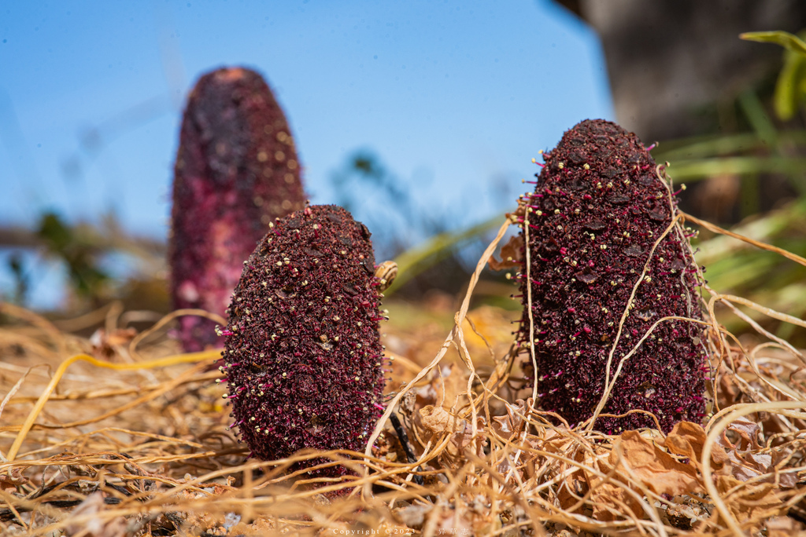

Cynomoriaceae
Desert Thumb Family / Malta Fungus
Cynomoriaceae is a unique family of flowering plants containing the single genus Cynomorium. These are obligate root holoparasites, meaning they completely lack chlorophyll and derive all nutrients and water from the roots of host plants. They appear as fleshy, reddish-brown spikes emerging from the ground in arid and saline habitats of the Mediterranean region and Central Asia. Recent molecular studies place this enigmatic family in the order Saxifragales.
Overview
The Cynomoriaceae family consists of just one genus, Cynomorium, with one or possibly two very similar species (often treated as one, C. coccineum). These bizarre plants are obligate holoparasites, primarily attacking the roots of salt-tolerant shrubs like saltbushes (Atriplex), tamarisks (Tamarix), and others growing in coastal salt marshes, deserts, and saline steppes across a wide range from the Canary Islands and Mediterranean basin eastward to Central Asia and Mongolia/China.
Lacking chlorophyll, Cynomorium cannot photosynthesize. Its vegetative body is an underground rhizome-like structure that connects to host roots via specialized absorptive organs called haustoria. The only visible part is the seasonal, unbranched, fleshy, reddish flowering spike that emerges above ground. This structure bears numerous tiny, reduced flowers. Historically, its affinities were obscure, but molecular data now firmly place it within the diverse order Saxifragales.
Cynomorium coccineum, often called the "Malta Fungus," was highly valued historically in European and Arabian medicine for various ailments, partly due to its striking blood-red appearance and collection locality on the "Fungus Rock" in Malta.
Quick Facts
- Scientific Name: Cynomoriaceae Endl. ex Lindl.
- Common Name: Desert Thumb Family, Malta Fungus
- Number of Genera: 1 (Cynomorium)
- Number of Species: 1 (or 2)
- Distribution: Arid/saline regions: Mediterranean basin, Canary Islands, Central Asia, S Mongolia, NW China.
- Evolutionary Group: Angiosperms - Eudicots - Rosids - Saxifragales
- Habit: Achlorophyllous root holoparasite
Key Characteristics
Growth Form and Habit
Plants are achlorophyllous (lacking chlorophyll), obligate root holoparasites. The vegetative body consists of underground rhizome-like structures attached to host roots. The visible portion is an erect, unbranched, fleshy, reddish-brown to dark purple flowering spike that emerges seasonally.
Leaves
True leaves are highly reduced to small, non-photosynthetic, yellowish or reddish scale-like structures arranged spirally along the emergent flowering stem. They lack stipules.
Inflorescence
The emergent structure is a dense, fleshy, terminal, club-shaped or cylindrical spike or head. This structure bears numerous tiny flowers densely packed among filamentous hairs.
Flowers
Flowers are minute, highly reduced, often reddish, embedded among hairs on the inflorescence axis. They can be unisexual or bisexual, with plants exhibiting complex sexuality (monoecious, dioecious, or polygamous). Flowers are generally radially symmetrical (actinomorphic) or slightly irregular.
- Perianth: Highly variable and reduced, consisting of 1-5 (sometimes more) free, linear or scale-like segments (tepals), or sometimes absent, especially in female flowers.
- Androecium (Male or Bisexual Flowers): Typically consists of a single stamen (rarely 2) with a filament and a 2-thecate anther releasing pollen.
- Gynoecium (Female or Bisexual Flowers): Consists of an inferior ovary formed from a single carpel, containing a single locule with one pendulous ovule. A single, terminal style with a small stigma is present.
Fruits and Seeds
The fruit is a small, hard, one-seeded, indehiscent, achene-like nutlet. Seeds are tiny and contain endosperm.
Chemical Characteristics
Plants are rich in tannins and anthocyanins (giving the red coloration). Various other compounds have been isolated, reflecting historical medicinal uses.
Field Identification
Identifying Cynomoriaceae (Cynomorium) relies on recognizing its unique parasitic habit and morphology in specific environments:
Primary Identification Features
- Fleshy, reddish/purplish flowering spike: Look for unbranched, club-shaped structures emerging directly from the ground.
- Lack of green color: The entire emergent plant lacks chlorophyll.
- Dense head of tiny flowers: Close inspection reveals numerous minute flowers embedded among hairs on the spike surface.
- Arid/Saline Habitat: Found in deserts, salt marshes, coastal dunes, or steppes.
- Association with host plants: Usually found near potential host shrubs like saltbushes (Atriplex), tamarisks (Tamarix), or other halophytes.
Secondary Identification Features
- Scale-like leaves: Small scales are visible along the flowering stem below the main flower head.
- Underground connection: Excavation (not recommended) would reveal connection to host roots via haustoria.
Seasonal Identification Tips
The plant is only visible when flowering:
- Emergence Season (Often spring, varies with rainfall): The fleshy spikes emerge, flower, and fruit within a relatively short period. They are absent above ground for the rest of the year.
- Year-round: The presence of suitable host plants in an appropriate arid/saline habitat might suggest potential occurrence.
Common Confusion Points
Cynomorium can be mistaken for other organisms:
- Fungi: The color and shape can resemble some mushrooms or club fungi, but Cynomorium has scale leaves and, upon close look, tiny flowers, unlike fungi.
- Orobanchaceae (Broomrapes): Other holoparasites, but typically have more recognizable (though often reduced) bilaterally symmetric flowers arranged in a spike, and different host ranges/habitats.
- Balanophoraceae: Another family of holoparasites with strange inflorescences, but structurally different (e.g., flowers often inside pits, different phylogenetic position). Primarily tropical.
- Focus on the combination: Achlorophyllous + Fleshy Red/Brown Spike + Tiny Embedded Flowers + Scale Leaves + Arid/Saline Habitat + Parasitic on Halophytes = Cynomoriaceae.
Field Guide Quick Reference
Look For:
- Fleshy, unbranched, reddish/purplish spike from ground
- No green color (achlorophyllous)
- Scale-like leaves on stem
- Dense head of tiny embedded flowers
- Inferior ovary (female/bisexual flowers)
- Arid or saline habitats
- Association with host shrubs (e.g., Atriplex, Tamarix)
Key Variations:
- Spike color (reddish to dark purple)
- Spike shape (club-shaped to cylindrical)
- Flower sexuality can vary
- Host plant species varies
Notable Examples
The Cynomoriaceae family contains only one genus and one (or possibly two very similar) species:

Cynomorium coccineum
Malta Fungus / Desert Thumb / Tarthuth
The sole representative of the family (sometimes Asian populations are called C. songaricum). This holoparasite produces the characteristic fleshy, reddish flowering spike in arid and saline regions across its wide range. It parasitizes the roots of various salt-tolerant plants and has a long history of use in traditional medicine and as a source of dye.
Phylogeny and Classification
The phylogenetic placement of Cynomoriaceae was a long-standing botanical puzzle due to its highly modified parasitic morphology, which obscured relationships. Historically, it was tentatively associated with other parasitic groups like Balanophorales or Santalales.
However, recent molecular phylogenetic studies using DNA sequence data have conclusively placed Cynomoriaceae within the large and diverse order Saxifragales, among the Rosid clade of Eudicots. This surprising placement means its closest relatives are non-parasitic families like Saxifragaceae, Crassulaceae, and Grossulariaceae. It represents an independent evolution of holoparasitism within this major angiosperm order. Its exact sister group within Saxifragales remains under investigation.
Position in Plant Phylogeny
- Kingdom: Plantae
- Clade: Angiosperms (Flowering plants)
- Clade: Eudicots
- Clade: Rosids
- Order: Saxifragales
- Family: Cynomoriaceae
Evolutionary Significance
Cynomoriaceae is evolutionarily significant for several reasons:
- Extreme Parasitic Adaptation: Shows profound morphological and physiological modifications associated with a holoparasitic lifestyle (loss of chlorophyll, reduced leaves, specialized haustoria).
- Phylogenetic Puzzle Resolved: Its placement in Saxifragales highlights the power of molecular data in resolving relationships obscured by extreme morphological divergence and convergent evolution (with other parasites).
- Independent Evolution of Parasitism: Represents another independent origin of parasitic plants within angiosperms, occurring within a typically non-parasitic order.
- Biogeography: Its wide but disjunct distribution across arid regions of the Old World raises interesting biogeographical questions.